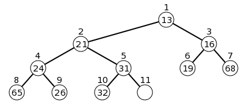
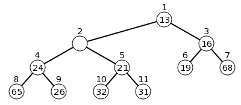
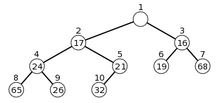
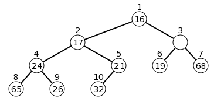
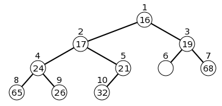
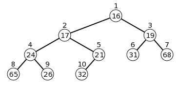
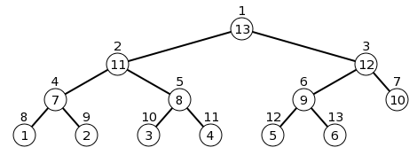
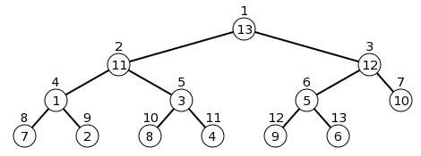
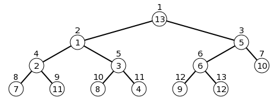
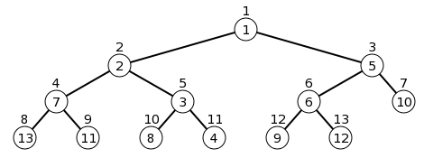

Priority Queues
A priority queue is like a queue in that it supports add and remove from "opposite sides" with operations:- add(e), offer(e): add an element
- element(), peek(): read the "highest priority" element
- remove(), poll(): read & remove the "highest priority" element
By using a suitable comparator, we can make easily change the notion of "smallest" by "largest". Ultimately the notion of the priority queue is quite general in that a FIFO queue can be seen a priority queue with comparison of elements "by time stamp on entering the queue."
Java Priority Queue
The Java priority queue is the appropriately named generic class PriorityQueue implementing the Queue interface. The key constructors are these:- PriorityQueue<E>(): the "current" element for selection is the smallest element with respect to the natural ordering on E, i.e., E is assumed to implement the Comparable interface.
- PriorityQueue<E>(int initialCapacity): specify the initial capacity.
- PriorityQueue<E>(int initialCapacity, Comparator<? super E> cmp): specify the initial capacity and the desired Comparator for E objects.
List-based implementations
There are actually two potentially viable list-based implementations:- An unordered LinkedList. In this case we simply add elements to the front of the list (or back), making the add operation constant time. It is the others which have a significant cost. Both element and remove must search the entire list for a smallest element, making them linear time operations.
- An reverse-ordered ArrayList. In this case the element and remove operations are constant time, since the smallest element is always the last one. It is the add which has significant cost, since we must find the correct position to add (logarithmic), plus shift all smaller elements up 1 (linear time).
| comparisons | data moves | total | |
|---|---|---|---|
| element |
(a) O(n) (b) O(1) |
(a) O(1) (b) O(1) |
(a) O(n) (b) O(1) |
| add |
(a) O(1) (b) O(log n) |
(a) O(1) (b) O(n) |
(a) O(1) (b) O(n) |
| remove |
(a) O(n) (b) O(1) |
(a) O(1) (b) O(1) |
(a) O(n) (b) O(1) |
Heaps
A heap, or more strictly speaking, a min heap, is an implementation of a priority queue in the form of a heirarchical tree-like structure where, at each node, the element is smaller than or equal to the elements at the child nodes. In particular, the root must be holding the least element. A max heap is one in which the notion of ordering of elements is reversed. In practice, a max heap is simply a min heap in which we use the "reverse comparator."Test Programs/NetBeans
The project we're using is PrioQueueDemo. The following test program illustrates several standard usages of Java's PriorityQueue class.System.out.println("queue: " + queue); System.out.println("queue_rev: " + queue_rev);
BinaryHeap
Like our other user-defined data structures, extensions of the QueueAdapter class below give us the ability to use our user-defined BinaryHeap class as we would a PriorityQueue. Create the class:Class Name: QueueAdapter package: queueThen insert the following content
Class Name: BinaryHeap package: heapThen insert the following content
private int capacity; private int size = 0; private E[] data; private Comparator<? super E> cmp = null;
Suppose we use the array data in positions 1 through size, then
- data[1] is the root
- data[2*n] and data[2*n+1] are the left and right childen of data[n], respectively
- data[n] has only a left child if 2*n == size
- data[n] is a leaf if 2*n > size
parent = n/2Saying that a complete binary tree satisfies the heap property means that at each node n,
data[n/2] ≤ data[n] (n != 1)or, looking at it the other way:
data[n] ≤ data[2*n] (when data[2*n] exists) data[n] ≤ data[2*n+1] (when data[2*n+1] exists)Here is an example:
Adding: percolate up
Inserting an element, elt, means creating a new position in the array. This position is called a "hole" whose initial value is:hole = ++size;The operation we do is called "percolate up" in which the hole is moved to the correct position in the tree so that we can do the insertion:
data[hole] = eltand know that the heap property is maintained:
data[hole/2] ≤ data[hole]And so, if necessary, the hole moves up the tree from the leaf while the data in the parent is shifted down with an operation like this:
data[hole] = data[hole/2]; hole = hole/2;For example, the steps to do the insertion of the value 17 in this tree would be this:
-
Increase the size to 11 and create a hole at position 11 like this:

-
Comparing 17 with the hole's parent would make the parent value shift down:
-
Again, comparing 17 with the hole's parent would make the next parent value shift down:

-
Finally, 17 is larger than the parent value at 1, so it gets inserted into the hole:

private int percolateUp(int hole, E elt) { while (hole != 1 && myCompare(data[hole/2], elt) > 0) { data[hole] = data[hole/2]; // shift parent down hole = hole/2; } return hole; } public boolean add(E elt) { if (size == capacity) { resize(2*capacity); } int hole = percolateUp( ++size, elt ); data[hole] = elt; return true; }
Removal: percolate down
Removal means deleting the node at the root, i.e., at position 1. This creates a hole into which we want to eventually insert the last element in the array which must give up its position:elt = data[size--]; hole = 1;The hole must move down the tree (percolate down) with an operation like:
hole = 2 * hole; or hole = 2 * hole + 1;
until we can set
data[hole] = eltsatisfied that the heap property is maintained:
elt ≤ data[2*hole] elt ≤ data[2*hole+1]When a hole goes down from parent to child, always choose a child with a smaller value. Programmatically, percolate down is a more complicated operation due to having to choose between two children and determining how many children do deal with. If we do a removal on the tree above (after the insert of 17 is complete) these are the steps;
-
Return the value and create a hole at position 1.
Pull out the value at node 11 (elt=31)
and decrease the size to 10:

-
31 is bigger than the smallest child, 16, so move the hole down
to position 3 and move 16 up:

-
Again, seeing that 31 is bigger than the smallest child, 19,
move the hole down to its position 6 and move 19 up:

-
Finally, since the hole has no children we move 31 into position 6:

private int percolateDown(int hole, E elt) { while (true) { int left = 2 * hole, right = 2 * hole + 1; if (left > size) { // hole is a leaf break; } // so hole must have at least a left child int child; // child with the smallest value if (left == size) { // hole has only a left child child = left; } else if (myCompare(data[left], data[right]) <= 0) { // 2 children with smaller left child = left; } else { // 2 children with smaller right child = right; } if (myCompare(elt, data[child]) <= 0) { break; // elt smaller than least child: correct position } else { data[hole] = data[child]; // shift child up hole = child; // move hole down } } return hole; } @Override public E remove() { if (size == 0) { throw new NoSuchElementException("remove"); } E top = data[1]; E insert = data[size--]; // get element to reinsert from root int hole = percolateDown(1, insert); data[hole] = insert; return top; }
BinaryHeap Test Programs
To test the effectiveness of this new class, in mainBasic, you can uncomment the import line://import heap.*;and replace the commented and uncommented sections:
Queue<Integer> queue = new PriorityQueue<Integer>(); Queue<Integer> queue_rev = new PriorityQueue<Integer>(20, rev_cmp); //Queue<Integer> queue = new BinaryHeap<Integer>(); //Queue<Integer> queue_rev = new BinaryHeap<Integer>(20, rev_cmp);A second test program is better for showing the underlying structure which provided by the BinaryHeap class:
Analysis
We see that, since the tree maintained is always a complete binary tree, the height (when non-empty) is flr(log n). This becomes, up to a constant factor, the maximum number of comparisons + data movements for either an element insertion or deletion.Heapsort concept
The idea of heapsort is that it is conceptually similar to selectionSort with a time improvement on the selection operation. An oversimplified version is as follows, starting from an array, A to be sorted, using an auxiliary binary heap H:// create the heap int i = 0; for( i = 0; i < A.length; ++i ) { H.add(A[i]); } // remove one-by-one, putting back into array i = 0; while (! H.isEmpty()) { A[i++] = H.remove(); }
- The "create the heap" portion of the code can actually be done in linear time, O(n), instead of O(n*log(n)) as currently written. The replacement code is the buildHeap operation described in the next section.
- The auxiliary heap, H, is not necessary as the heap structure can be held within the array A itself, thus reducing the O(n) extra memory requirement to O(1) extra memory.
The buildHeap operation
We will see that heapSort and other operations give us the raw data in the array and expect us to "heapify" this as the initial step. Although we can create the initial heap by a sequence of add operations, it turns out to be more efficient to use the separate buildHeap operation which is not part of the standard PriorityQueue. The buildHeap process effectively goes row-by-row, starting from the second-to-last row and does a percolateDown operation, thus making the subtree a heap. Here is a depiction of the process (a "worst-case" situation):-
The raw array dara is of size 13 is
[13, 11, 12, 7, 8, 9, 10, 1, 2, 3, 4, 5, 6]
Putting these directly in order into the tree gives: -
The process starts at node 6 (size/2) and works backward.
After nodes 6, 5, 4 are done we have:

-
After nodes 3, 2 are done we have:

-
Finally, after node 1 is done:

public void buildHeap(E[] a) { size = a.length; if (size > capacity) { capacity = size; data = (E[]) new Object[capacity+1]; } for (int i = 0; i < a.length; ++i) { data[i+1] = a[i]; } for (int i = size/2; i > 0; --i) { int hole = i; E elt = data[hole]; hole = percolateDown(hole, elt); data[hole] = elt; } }
- the total number of nodes is 2h+1– 1
- the sum of the heights of all the nodes is 2h+1– 1 – (h + 1)
n = 2h+1– 1then log(n+1) = h + 1 and and the sum of the heights would be
n – log(n+1) < nIf the tree is complete, but not necessarily perfect, we can see, from the first point above that
|
the number of nodes in a perfect tree of height h+1 |
< 2 * |
the number of nodes in a perfect tree of height h |
| the sum of the heights in a complete tree with n nodes |
≤ | the sum of the heights of the next perfect tree (with fewer than 2*n nodes) |
≤ | 2 * n |
HeapSort
The heapsort algorithm uses a binary heap to do its work. The heap is built as a max heap, using a reverse comparator. The program below indicates the heapsort behavior which works in two phases:- convert the array into a MAX heap: run the buildHeap operation on the original array
- remove (maximum) and put into position: one at a time, remove from the heap, re-inserting the elements into the array from last (largest) to first (smallest)
- O(n)
- O(n*log(n)) since there are n removals, and a removal counts O(log(n))
to sort: [5, 3, 7, 1, 4, 8, 2] ************************ buildHeap restructures the array: [8, 4, 7, 1, 3, 5, 2] | 2 this output | 7 indicates the | 5 structure | 8 of the heap | 3 | 4 | 1 ------------------------ remove() = 8 [7, 4, 5, 1, 3, 2][8] | 5 the removed element (max) | 2 goes into the top of | 7 array, which is precisely | 3 the position vacated | 4 by the remove operation | 1 ------------------------ remove() = 7 [5, 4, 2, 1, 3][7, 8] | 2 | 5 | 3 | 4 | 1 ------------------------ remove() = 5 [4, 3, 2, 1][5, 7, 8] | 2 | 4 | 3 | 1 ------------------------ remove() = 4 [3, 1, 2][4, 5, 7, 8] | 2 | 3 | 1 ------------------------ remove() = 3 [2, 1][3, 4, 5, 7, 8] | 2 | 1 ------------------------ remove() = 2 [1][2, 3, 4, 5, 7, 8] | 1 no more removals necessary sorted: [1, 2, 3, 4, 5, 7, 8]